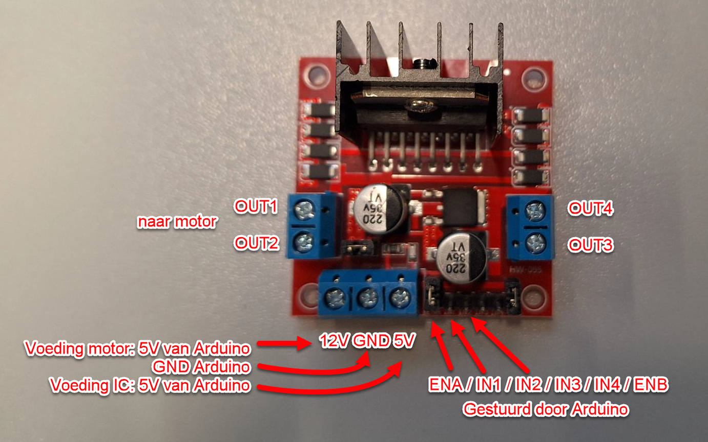
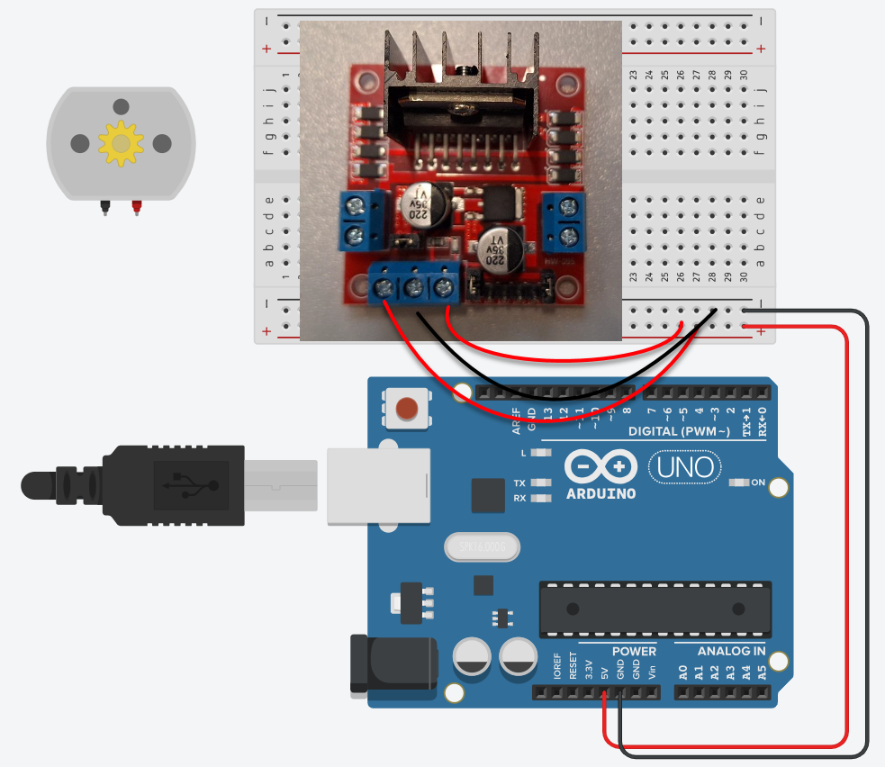
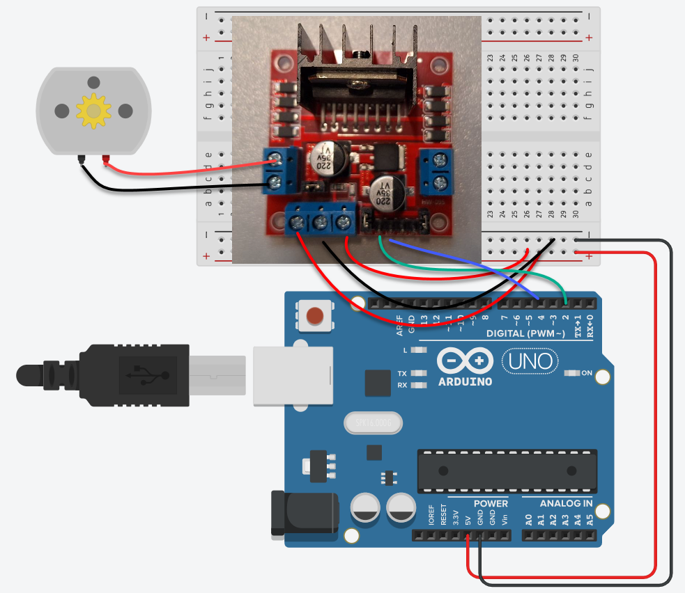

Bouw de vorige oefening opnieuw, maar nu met een L298N-module in plaats van een L293D. Je code mag ongewijzigd blijven. Het enige wat je moet uitzoeken is welke pin van de module overeenkomt met welke pin van het IC.
Dat klinkt als flauw werk, en toch is dit het soort opdracht dat je later het vaakst krijgt. Er ligt een schakeling die werkt, en er moet een component vervangen worden door een ander merk of type. Je krijgt dan geen nieuw schema, je krijgt een datasheet en de vraag of je het even wil aanpassen.
De L293D kan ongeveer 600 mA per kanaal aan. Dat volstaat voor een kleine hobbymotor, maar niet voor iets dat echt moet trekken. De L298N doet hetzelfde werk en kan er een veelvoud van hebben. Je koopt hem zelden als los IC. Meestal krijg je een kant-en-klare module met de koelplaat, de vrijloopdiodes en schroefklemmen er al op.

De namen op de module zijn niet die van de L293D, maar de functies zijn identiek. De volledige vertaaltabel staat op De H-brug. In het kort: 1,2EN heet hier ENA, en 1A en 2A heten IN1 en IN2.
Dat is de voeding voor de motoren, de Vcc2 van de L293D. Jouw motor werkt op 5 V, dus daar zet je 5 V op. Je mag daar de 5 V van de Arduino voor gebruiken, of een aparte voeding nemen. Zet er niet 12 V op omdat het er staat.
Eerst de voeding en de motor. De module krijgt zijn 5 V en zijn massa van de Arduino, en de motor gaat op OUT1 en OUT2.

Daarna de drie stuurdraden vanuit de Arduino. Pin 2 gaat naar IN1, pin 4 naar IN2, en pin 3 naar ENA.

ENA is de pin waar je met analogWrite() de snelheid op regelt, dus die moet op een pin met een ~. Van pin 2, 3 en 4 is alleen pin 3 zo'n pin. Vandaar dat de enable in het midden zit en de twee richtingspinnen ernaast.
Sla je oefening op.
Overloop volgende checklist om je oefening zelf te evalueren:
Dat is het hele punt van deze oefening. Onder de drie constanten bovenaan verandert er niets, en de loop() is regel voor regel dezelfde als in de vorige oefening.
Merk op dat de commentaar bij de constanten wel mee verandert. Een pinnummer zegt op zich niets, maar de naam van de aansluiting waar hij aan hangt wel.
const int enablePin = 3; // ENA van de L298N, moet een PWM-pin zijn
const int in1Pin = 2; // IN1
const int in2Pin = 4; // IN2
const int potPin = A0;
const int midden = 512;
void setup()
{
pinMode(enablePin, OUTPUT);
pinMode(in1Pin, OUTPUT);
pinMode(in2Pin, OUTPUT);
}
void loop()
{
int potWaarde = analogRead(potPin);
int snelheid = 0;
if (potWaarde < midden)
{
digitalWrite(in1Pin, LOW);
digitalWrite(in2Pin, HIGH);
snelheid = map(potWaarde, midden - 1, 0, 0, 255);
}
else
{
digitalWrite(in1Pin, HIGH);
digitalWrite(in2Pin, LOW);
snelheid = map(potWaarde, midden, 1023, 0, 255);
}
analogWrite(enablePin, snelheid);
}